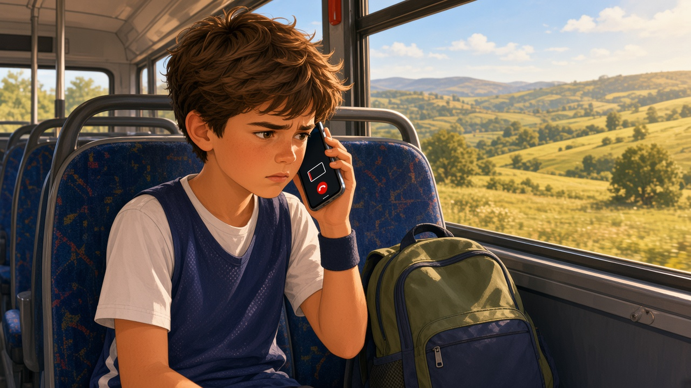
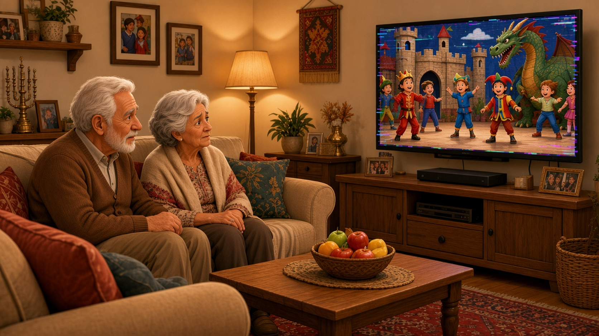

التواصل عن بُعد
مكالمة من الطريق، عرض بثّ حيّ أو رسالة لمجموعة بعيدة — كيف نبقى على تواصل؟
تأمّلوا الموضوعات الثلاثة واقرؤوا الأوصاف واختاروا معًا ما تريدون البحث فيه.

مكالمات أثناء السفر
هل تسمعونني؟ لحظة… اختفت المكالمة!
لديكم تحديث مهمّ من الطريق. كيف تنقلونه عندما تختفي التغطية ثم تعود؟
لقراءة القصّة ←
بثّ تلفزيونيّ
على المسرح يستمرّ العرض. وعلى الشاشة تجمّد كلّ شيء.
الجدّ والجدّة ينتظران رؤيتكم تظهرون. كيف نتأكّد أنّ من يتابع عن بُعد يرى ويسمع ما يحدث؟
لقراءة القصّة ←
تواصل بين مجموعات في الميدان
أنتم هنا. والأصدقاء أبعد في المسار. كيف ننسّق؟
مجموعة وصلت إلى الاستراحة والأخرى ما زالت في الطريق. كيف نرسل تحديثًا ونتلقّى ردًّا عندما لا توجد تغطية؟
لقراءة القصّة ←